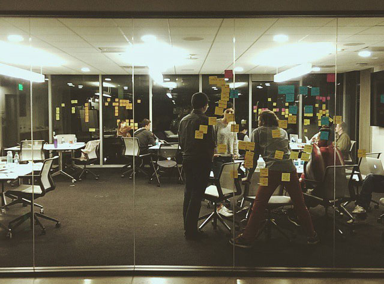
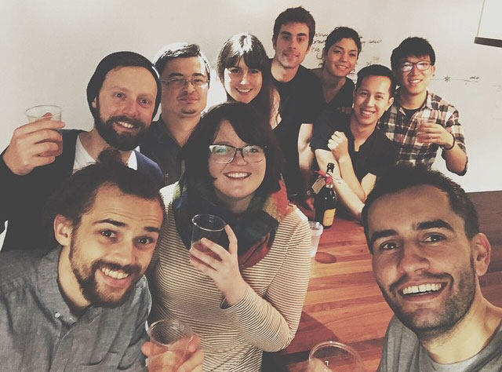

April 03, 2015
Why Creative Technologist
In fall 2014 I started to work at AKQA for the creative technology apprenticeship program. At first I thought it’s going to be a normal internship, probably going to work with a supervisor on a client project, but in fact they put us through a 12-week program where we have to do from developing concepts, designing user experience, to actually prototyping and implementing the products. And it’s not just helping out the full-time employees on minor stuffs but actually taking full control of our ideas and being in charge of presenting to big clients. People in this program are all multi-disciplinary designers; there are people with industrial design background plus some technical skills, or people from a computer science background and shifting to interaction design. There are also great visual designers who can code. It was so great to meet people with similar interests, and learn how they work on both design and technology.  Hackathon Every other week we have this one-week intensive hackathon where we basically go through concepting, prototyping and presenting in 5 days started with a brief from the clients. We grouped into teams of two or three and sometimes with an additional person from the client to work with us. On Monday we meet with the clients, get brief on what they want us to solve or achieve, and then go back to our teams to start doing research. Ideally with the insights from the research we can start coming up ideas on Tuesday. By the end of Tuesday we usually have several pretty solid ideas where we will present on Wednesday to the clients and our senior people. From those initial feedbacks we then decide on one concept to develop and basically go full speed ahead on Thursday to implementing the idea. At AKQA we believe in demonstrating functional prototypes instead of decks, so we not only have to tell the story of our ideas but also show how they work with our prototypes. And finally on Friday we present our ideas to the clients. Both the clients and our senior managers will be the judge to score our presentations, and then announce a winner for this hackathon. Usually the winners not only get a prize but also get to continue work with the client to fully develop their idea. Roles We all have multiple roles during the process, we can be a design researcher or an UX designer in the early concepting stage, utilizing some UX tools to help develop insights for our ideas and later on finalize our user flow. We can be in a product manager’s role overseeing the whole process and deciding how we are going to collaborate in this short amount of time. Depending on our skill sets, we might be working on web development, microcontrollers + electronics, 3D rendering, or video editing + motion graphics during our prototyping stage. Since AKQA is a digital marketing agency, we also need to be confident about presenting ideas to the clients, so we definitely need some storytelling skills and sometimes copywriting.  Why Creative Technologist? With the apprenticeship experience, I’m now working full-time as an Associate Creative Technologist at AKQA, which allows me to be able to participate in different stages of the creative process, and also working on internal projects while teaching myself stuffs that I’ve never done before. So, why creative technologist? Because first, we can take on challenges we’ve never faced before; we are like the magicians in the company, they always assume that we can figure everything out, and we did most of the time. Secondly, as I mentioned earlier, we can play different roles in the creative process; we are a bunch of versatile and open-minded people who are willing to contribute on both design and development. Third and most important of all, we are the bridge between designers and developers; we can easily jump into a UX meeting and then jump back to our developer team, understanding what we should do next. Next time you heard about creative technologist, don’t quickly jump into conclusion that it’s just a fancy label for developers. We are also designers, makers, thinkers, and great storytellers, believe it or not.